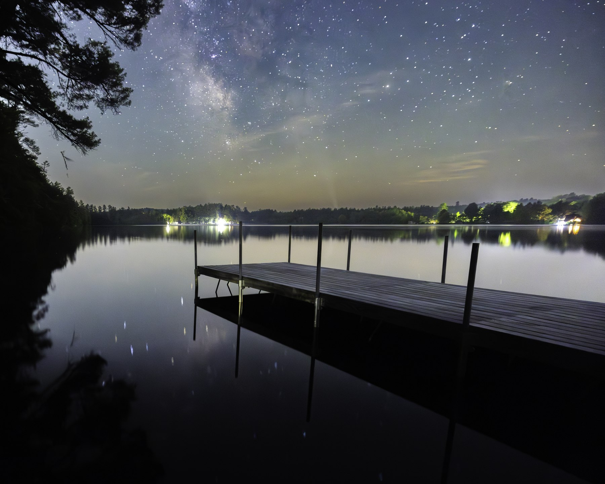
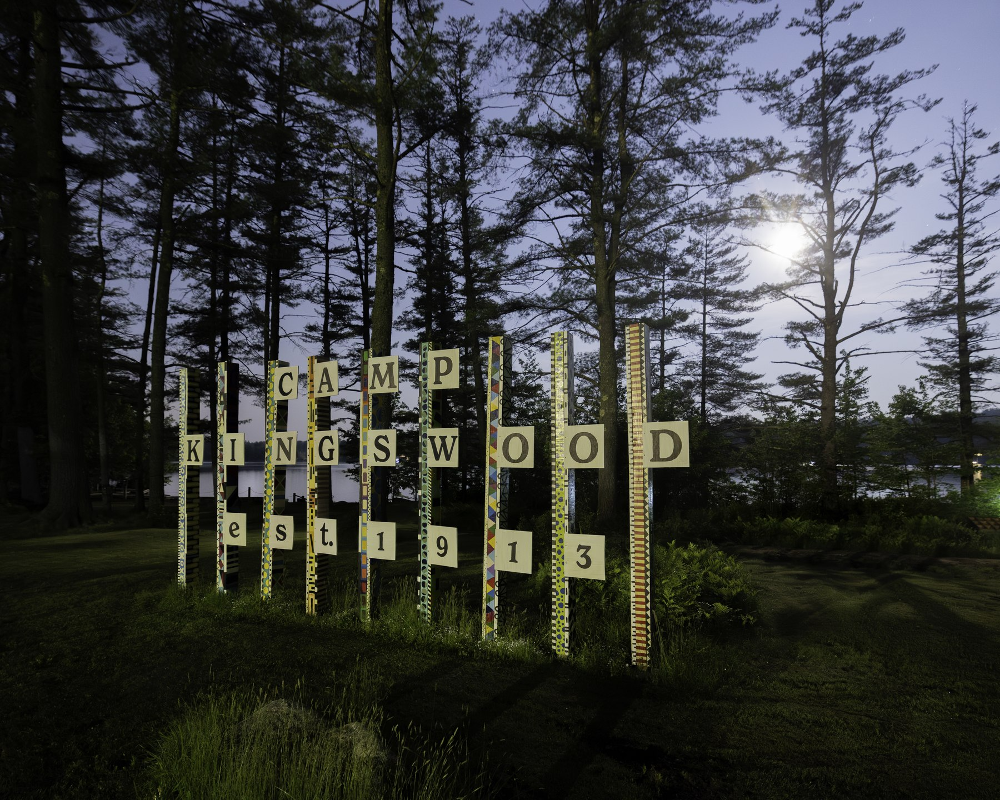
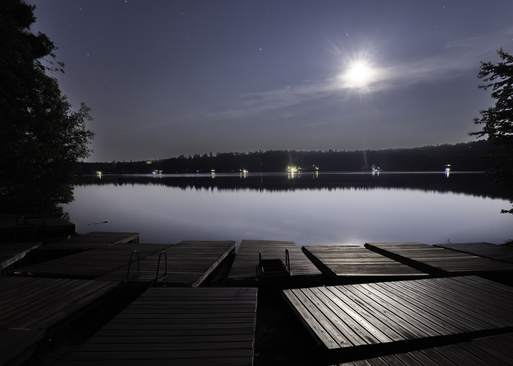
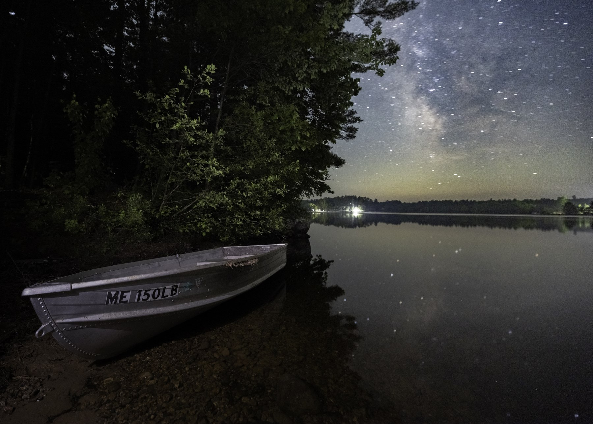
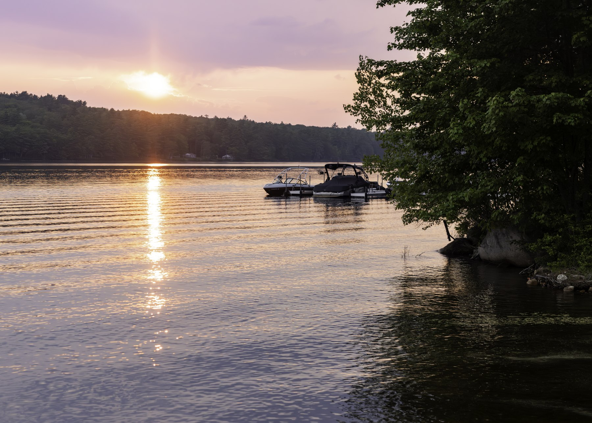

The working plan
One page for the whole engagement. The plan is live now; every section below it fills in as the work lands, and the link never changes. Updated August 5.
Photographs made at Kingswood on a June night last year.





This weekend adds to them.
Jodi asked to talk through the deliverables, so that conversation comes first: we settle the list together on arrival, or by email before it, and this page updates the same day. Until then, the sections below carry the working shape of the weekend, not the final list.
Arrival in the evening. The first working night begins: camp after hours, midnight toward dawn.
The first full day and the walk around camp. The media team's first day shooting alongside.
The full working rhythm: the camp in its closing days, golden hours at both ends, evening debrief.
Coverage across camp continues; the last working night.
Morning light, the media-library close-out work, book scoping, and wrap.
Nights are working hours. The after-hours character of camp, midnight to dawn, is part of the library, so I step away for a few daytime hours to stay sharp; the schedule plans around it.
The finer schedule takes its shape on arrival, around the camp's own rhythm. One thing the weekend needs from camp: the walk, a tour of the grounds with people who carry a long attachment to Kingswood. Alumni, children of alumni, staff who grew up here. Naming the walking companions before Friday helps.
The moon thins toward new (Wednesday the 12th); each night it rises later and darker. Air is clean all week. Refreshed by hand; as of early Wednesday, August 5.
A first handful of finished photographs lands here within days of the weekend, so the team sees where the library is headed.
The finished library arrives here, organized by what each image is for, licensed for Kingswood's marketing, development, and community use. You open it already knowing which image is which job.
Your photographers shoot alongside me the whole weekend, and I am there in support of their success. Settings, seeing, and a debrief each day. They keep shooting after I leave; the weekend is built to make their next month better, not to replace them.
The division of labor is clean. Your team owns camp's daily record; that frees this weekend for what is special about this place. The shot list is: capture what is special.
This is the shape it takes: a working field guide from a recent camp residency. Kingswood's own version starts from your cameras, your waterfront, and your light, and it gets written from what we actually work on during the visit.
The Kingswood field guide and the debrief notes land here.
The camp's own media from the summer, closed and organized into a clean archive, handed back with written instructions for maintaining it, so next summer starts organized.
Two photo books: a general donor book and one dedicated book. Both take their scope during the weekend; layouts come here for Kingswood's approval before anything prints.
A print store of selected frames for the Kingswood community. Details settle after the weekend.
Questions and notes between now and the weekend go to noah@abba-photo.com. They get answered, and anything that changes the plan is folded into this page, so the link you have is always current.
This page carries the plan and the deliverables. Terms live in the agreement, separate from this page.